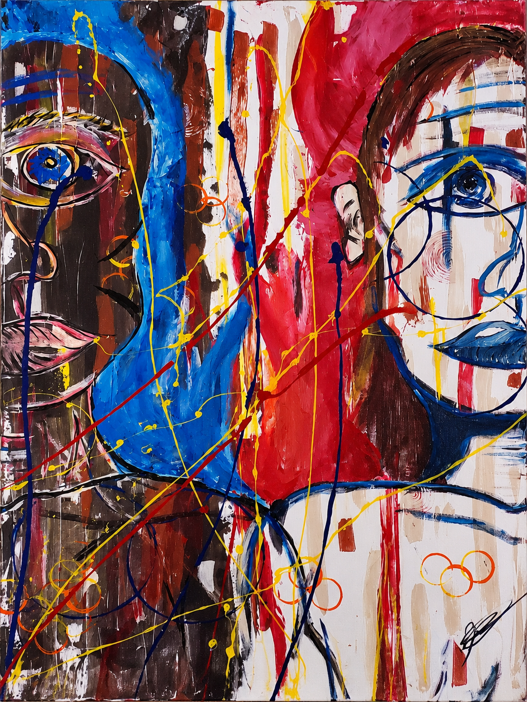

01
Two people.
Human / divided / together
Two people.
One canvas.
This is not primarily a painting about ethnicity. In this piece, the woman carries fire: passion, movement, instinct, intensity. The man carries calm: planning, structure, patience, organization. They are opposing energies, but not enemies. The tension comes from putting both forces on one canvas and asking what happens when neither one is allowed to erase the other.